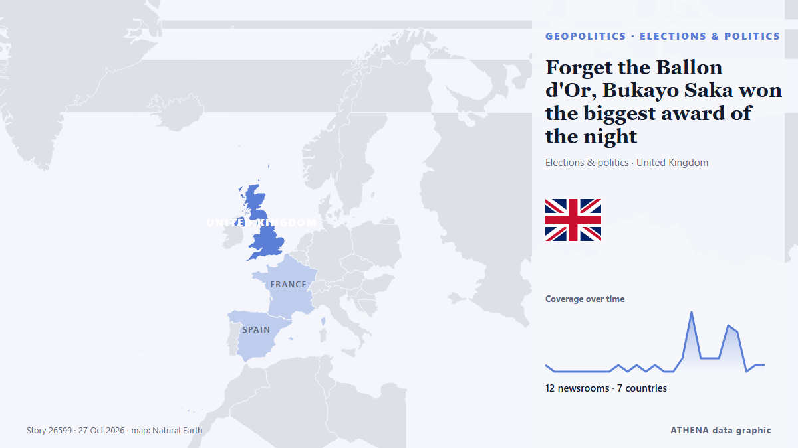

Forget the Ballon d'Or, Bukayo Saka won the biggest award of the night

Bukayo Saka wins the award that celebrates football beyond trophies For me, Bukayo Saka won one of the most meaningful awards of the night at the 2026 Ballon d'Or ceremony in London. von Gulf News
Unabhängig gemeldet von 12 Medien in 7 Ländern seit dem 24. Okt., zuerst von Vanguard; die Berichterstattung flaut ab. ATHENA findet in der Berichterstattung keine Risikoindikatoren. Die Konfidenz liegt bei 87 % (hoch): 12 Medien bestätigen es unabhängig, bei einer mittleren Verlässlichkeit der Quellen von 70 %. Medien nach Land: Vereinigtes Königreich (21), Nigeria (6), Katar (3). Berichterstattung: 24. Okt. bis 27. Okt., 75 Stunden.
Warum es wichtig ist: Sicherheits- und diplomatische Entwicklungen können Bündnisse, Handel und Märkte weit über die direkt beteiligten Länder hinaus verschieben.
Was sich geändert hat: 23 neue Berichte von 11 Redaktionen in den 24 Stunden bis 27. Okt..
Erste Schlagzeile: Why has the Ballon d'Or 2026 ceremony been delayed?
Schlagzeilen werden auf Englisch angezeigt, wie veröffentlicht.
Auf einen Blick
Ausgewählt, bewertet und geschrieben nach der veröffentlichten Methodik von ATHENA. Kein Redakteur greift in einzelne Ereignisse ein. So entsteht ATHENA ›
| 24 Oct 05:20 UTC | 1 |
|---|---|
| 24 Oct 08:20 UTC | 0 |
| 24 Oct 11:20 UTC | 0 |
| 24 Oct 14:20 UTC | 0 |
| 24 Oct 17:20 UTC | 0 |
| 24 Oct 20:20 UTC | 0 |
| 24 Oct 23:20 UTC | 0 |
| 25 Oct 02:20 UTC | 0 |
| 25 Oct 05:20 UTC | 1 |
| 25 Oct 08:20 UTC | 0 |
| 25 Oct 11:20 UTC | 1 |
| 25 Oct 14:20 UTC | 0 |
| 25 Oct 17:20 UTC | 1 |
| 25 Oct 20:20 UTC | 0 |
| 25 Oct 23:20 UTC | 0 |
| 26 Oct 02:20 UTC | 2 |
| 26 Oct 05:20 UTC | 9 |
| 26 Oct 08:20 UTC | 2 |
| 26 Oct 11:20 UTC | 2 |
| 26 Oct 14:20 UTC | 2 |
| 26 Oct 17:20 UTC | 7 |
| 26 Oct 20:20 UTC | 6 |
| 26 Oct 23:20 UTC | 0 |
| 27 Oct 02:20 UTC | 1 |
| 27 Oct 05:20 UTC | 1 |
Warum diese Zahlen
Bedeutung
Risiko
Konfidenz
Die Berichterstattung – wer berichtete, und wann
Schlagzeile wie veröffentlicht · öffnet das Original- Vanguard · Nigeria2026 Ballon D’Or: Too close to call
- Al Jazeera English · KatarWho are the best players never to win the Ballon d’Or?
- Vanguard · Nigeria2026 Ballon d’or ceremony: date, time and how to watch
- Al Jazeera English · KatarWhen is the 2026 Ballon d’Or, who are the favourites, and how can you watch it?
- Evening Standard (London) · Vereinigtes KönigreichWho will win 2026 Ballon d'Or Feminin? Clear favourite emerges ahead of ceremony
- Evening Standard (London) · Vereinigtes KönigreichWho will win young talent of the year at Ballon d'Or 2026? Men's and women's nominees in full
- Evening Standard (London) · Vereinigtes KönigreichWho will win goalkeeper of the year at Ballon d'Or 2026? Men's and women's nominees in full
- Evening Standard (London) · Vereinigtes KönigreichWho will win men's coach of the year at Ballon d'Or 2026? Nominees in full as Mikel Arteta vies for prize
- Evening Standard (London) · Vereinigtes KönigreichWho will win club of the year at Ballon d'Or 2026? Men's and women's nominees in full
- BBC News · Vereinigtes KönigreichWho should win the men's Ballon d'Or? BBC Sport pundits have their say
- Evening Standard (London) · Vereinigtes KönigreichWho votes for the Ballon d'Or award?
- Evening Standard (London) · Vereinigtes KönigreichWho was last English player to win Ballon d'Or - and when was it?
- Evening Standard (London) · Vereinigtes KönigreichWhen is the Ballon d'Or 2026? Ceremony start time, odds and winners
- Evening Standard (London) · Vereinigtes KönigreichWhy is 2026 Ballon d'Or ceremony being held in London?
- Evening Standard (London) · Vereinigtes KönigreichWhere to watch Ballon d'Or 2026 FOR FREE: TV channel and live stream today
- Evening Standard (London) · Vereinigtes KönigreichBallon d'Or 2026: Who will win... and who should win?
- The Scotsman · Vereinigtes KönigreichWhat time will the Ballon d'Or be awarded, where can I watch the ceremony, list of nominees and hosts
- Indian Express · IndienBallon d’Or 2026 Ceremony: Live Streaming details, full list of men’s and women’s nominees, time and other details
- Evening Standard (London) · Vereinigtes KönigreichBallon d'Or 2026 ceremony running order: When will award winners be announced?
- Manchester Evening News · Vereinigtes KönigreichBallon d'Or 2026 results: Winners announced as Erling Haaland and Bruno Fernandes ranked
- Al Jazeera English · KatarBallon d’Or 2026 award ceremony LIVE: Winners, reactions and latest news
- Vanguard · NigeriaBallon d’Or 2026: Full list of winners
- WalesOnline · Vereinigtes KönigreichBallon d'Or 2026 chaos as winners leaked and investigation launched
- The Scotsman · Vereinigtes KönigreichCaroline Weir earns Scotland's highest ever ranking in women's Ballon d'Or as men's award 'leaked'
- Punch · NigeriaFULL LIST: Last 10 rankings for 2026 Ballon d’Or revealed
- Evening Standard (London) · Vereinigtes KönigreichWho won the fashion Ballon d'Or? Lamine Yamal, Ousmane Dembélé and Alexia Putellas lead red carpet looks
- Punch · NigeriaBallon d’Or 2026: Full list of 30 nominees profile, records, others
- Evening Standard (London) · Vereinigtes KönigreichWhy has the Ballon d'Or 2026 ceremony been delayed?
- Punch · NigeriaFULL LIST: 2026 Ballon d’Or winners [UPDATING LIVE]
- Hespress English · MarokkoAchraf Hakimi finishes 13th in 2026 Ballon d’Or rankings ahead of Vinicius Jr.
- Stuff · NeuseelandHarry Kane wins Ballon d'Or after 'winners' published by mistake hours before award
- Evening Standard (London) · Vereinigtes KönigreichFans try to break through security at Ballon d'Or ceremony in London
- Evening Standard (London) · Vereinigtes KönigreichBukayo Saka speech in full as Arsenal star wins Socrates Award at 2026 Ballon d'Or
- Gulf News · Vereinigte Arabische EmirateWhy did Lionel Messi skip Ballon d'Or ceremony despite finishing fifth at 39
- Gulf News · Vereinigte Arabische EmirateForget the Ballon d'Or, Bukayo Saka won the biggest award of the night